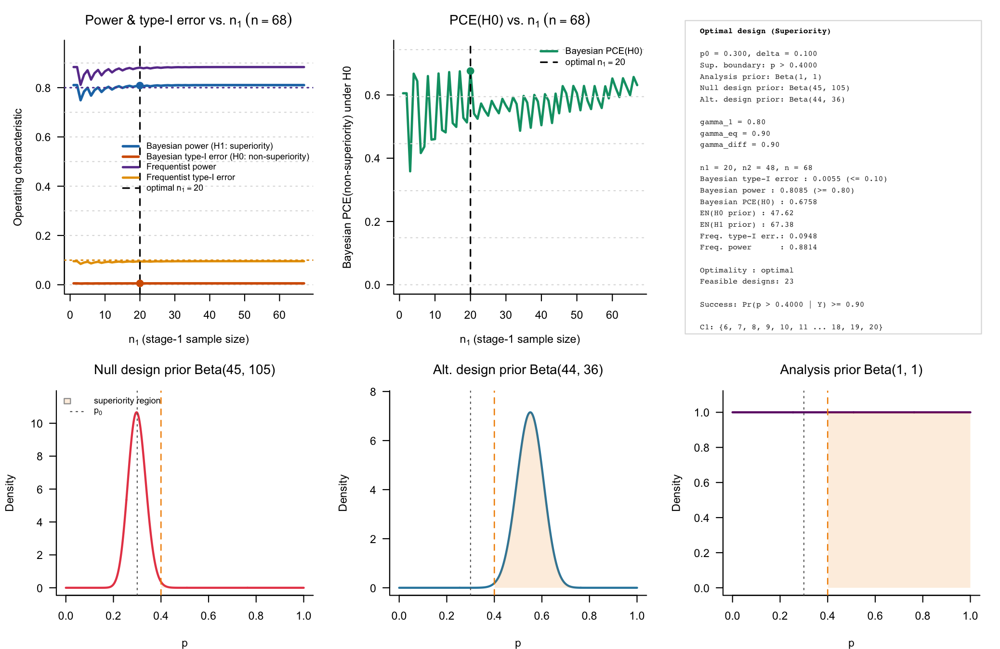
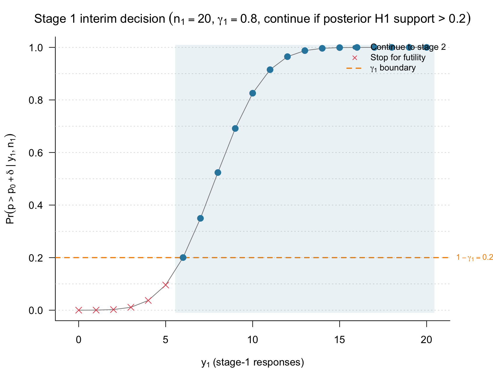
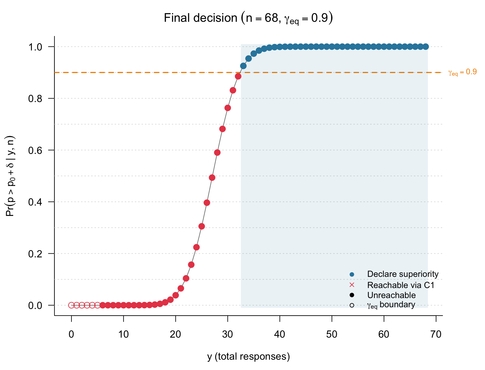
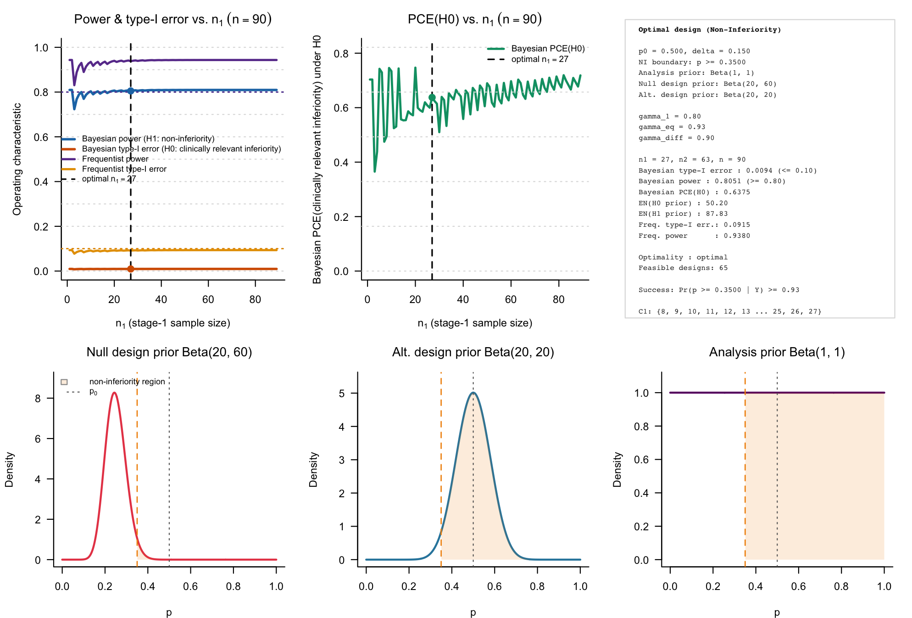
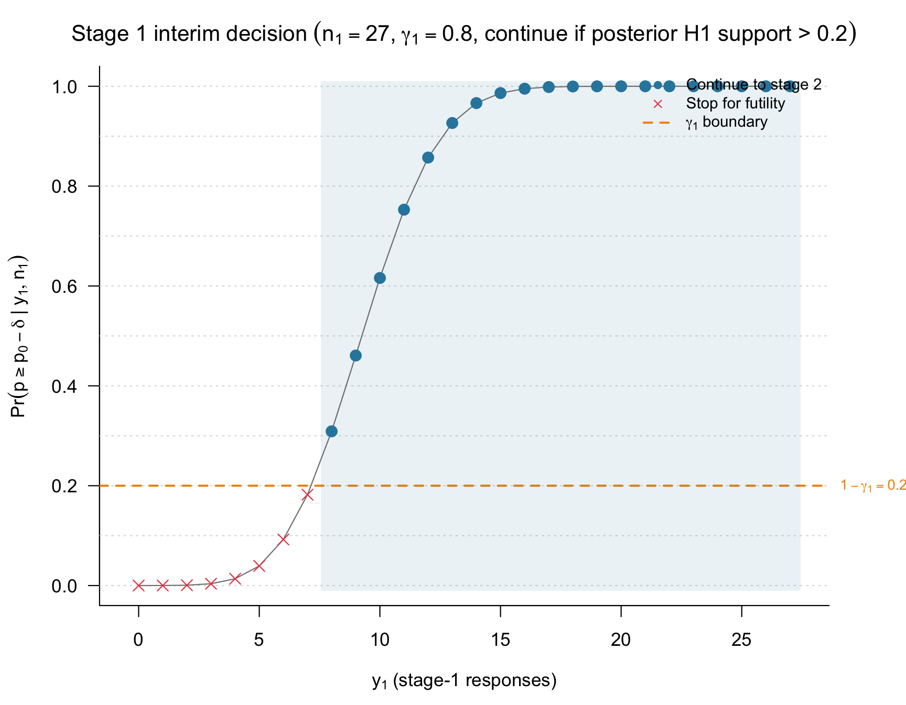
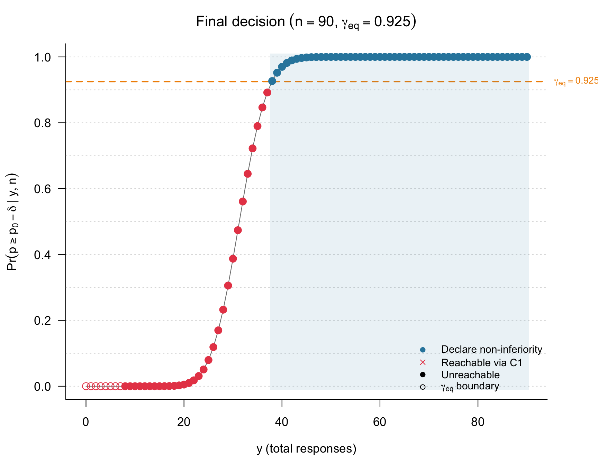

Two-stage ROPE designs for single-arm non-inferiority and superiority trials
Riko
Kelter
Institute of Medical Statistics and Computational Biology
Faculty of Medicine, University of Cologne
Cologne, Germany
28 October 2026
bfbin2arm-singlearm-twostage-rope-ni-superiority.rmdOverview
This vignette illustrates deterministic two-stage ROPE-based designs
for single-arm phase II trials with binary endpoints. The functions
design_singlearm_twostage_rope_ni() and
design_singlearm_twostage_rope_sup() calibrate a design
with one interim analysis and futility-only stopping.
The analysis prior is used to compute posterior ROPE probabilities, whereas the two design priors describe predictive scenarios under the null hypothesis and the desired hypothesis . For a fixed clinical margin and set of evidence thresholds, the algorithm first determines the smallest feasible fixed-sample maximum size . It then examines all allocations with and selects the feasible allocation minimizing the expected sample size under the null design prior, .
At the interim analysis, continuation requires posterior support for the desired hypothesis to exceed . Equivalently, the study stops for futility when posterior support for the null hypothesis is at least .
Superiority example: HER2-positive gastric cancer
We first consider a superiority design motivated by a later-line HER2-positive gastric or gastroesophageal-junction cancer setting. Let the historical objective-response benchmark be . A response-rate improvement of at least ten percentage points is considered clinically meaningful, giving the superiority boundary
The analysis prior is uniform. The null design prior is , centered at 0.30, representing non-superiority scenarios. The alternative design prior is , centered at 0.55, representing a clearly favorable superiority scenario. We use a final evidence threshold of 0.90 for superiority and for compelling evidence for non-superiority. At the interim, the trial stops for futility if posterior support for non-superiority is at least 0.80.
sup_2st <- design_singlearm_twostage_rope_sup(
p0 = 0.30,
delta = 0.10,
analysis_prior = c(1, 1),
design_prior_h0 = c(45, 105),
design_prior_h1 = c(44, 36),
gamma_1 = 0.80,
gamma_eq = 0.90,
gamma_diff = 0.90,
alpha = 0.10,
power = 0.80,
pce = 0.60,
alpha_freq = 0.10,
power_freq = 0.80,
p_t1e = 0.40,
p_power = 0.55,
nmax = 200,
progress = FALSE
)The summary function allows a convenient overview:
summary(sup_2st)
#>
#> Summary: Single-arm two-stage ROPE superiority design
#> =======================================================
#>
#> Hypotheses
#> ------------------------------
#> H0 : p <= 0.4000 (non-superiority)
#> H1 : p > 0.4000 (superiority)
#>
#> Decision rules
#> ------------------------------
#> Interim : Continue if Pr(p > 0.4000 | y1, n1) > 0.20
#> Final : Declare superiority if Pr(p > 0.4000 | y, n) >= 0.90
#> Calibration targets
#> ------------------------------
#> Predictive type-I error <= 0.1000
#> Predictive power >= 0.8000
#> Predictive PCE(H0) >= 0.6000
#> Frequentist type-I error <= 0.1000 at p = 0.4000
#> Frequentist power >= 0.8000 at p = 0.5500
#>
#>
#> Single-arm two-stage ROPE superiority design
#> ============================================
#> Benchmark p0 : 0.3000
#> Sup. boundary (p >) : 0.4000 (0.4000, 1]
#> Analysis prior : Beta(1, 1)
#> Null design prior : Beta(45, 105)
#> Alt. design prior : Beta(44, 36)
#> Interim threshold gamma_1 : 0.8000
#> Final threshold gamma_eq : 0.9000
#> Diff. threshold gamma_diff : 0.9000
#> Target predictive alpha : 0.1000
#> Target predictive power : 0.8000
#> Target predictive PCE(H0) : 0.6000
#> Target frequentist type-I error : 0.1000 at p = 0.4000
#> Target frequentist power : 0.8000 at p = 0.5500
#> Optimality criterion : optimal
#> Direction : superiority
#>
#> Optimal design
#> ------------------------------
#> n1 (stage 1) : 20
#> n2 (stage 2) : 48
#> n (maximum) : 68
#> Continuation region C1 : {6, 7, 8, 9, 10, 11, 12, 13, 14, 15, 16, 17, 18, 19, 20}
#>
#> Operating characteristics
#> -----------------------------------------------
#> 1-stage 2-stage
#> Predictive type-I error (non-superiority) 0.0055 0.0055
#> Predictive power (superiority) 0.8104 0.8085
#> PCE(non-superiority), any stage 0.6054 0.6758
#>
#> EN under H0 prior : 47.6171
#> EN under H1 prior : 67.3799
#> Frequentist type-I error : 0.0948 (target <= 0.1000 at p = 0.4000)
#> Frequentist power : 0.8814 (target >= 0.8000 at p = 0.5500)
#>
#> Declare superiority : Pr(p > 0.4000 | Y) >= 0.90The selected design reports the maximum sample size , the continuation region at the interim analysis, predictive Bayesian power and type-I error, the probability of compelling evidence for non-superiority, and expected sample sizes under the two design priors.
The interim and final decision structures can be inspected graphically.
plot(sup_2st, type = "default")
Figure 1: Bayesian calibration of a single-arm two-stage ROPE-based clinical phase II trial with binary endpoints. The test used is a superiority test.
It is also possible to visualize and plot the interim and final continuation regions for the resulting design:


Figure 2 and 3: Interim continuation and final decision regions for the single-arm two-stage ROPE superiority design.
This is helpful for monitoring a two-stage single-arm superiority trial: The first plot on the left shows that between and responses, out of , the trial is continued (also compare the upper right panel in Fig. 1). The right plot shows that for the final patients, superiority is declared when at least responses are observed.
Single-arm one-stage design for comparison
sup_1st <- design_singlearm_onestage_rope(
p0 = 0.30,
delta = 0.10,
direction = "superiority",
a = 1,
b = 1,
da0 = 45,
db0 = 105,
da1 = 44,
db1 = 36,
gamma_eq = 0.90,
gamma_diff = 0.90,
target_power = 0.80,
target_type1 = 0.10,
target_pce_h0 = 0.60,
calibration = "full",
target_freq_power = 0.80,
target_freq_type1 = 0.10,
dp = 0.55,
n_min = 2,
n_max = 200
)
sup_1st
#> One-stage single-arm ROPE design
#> Direction: superiority
#> Calibration: full
#> Search range n: 2 to 200
#> Null probability p0: 0.3
#> Margin delta: 0.1
#> Probability threshold gamma_eq: 0.9
#> Probability threshold gamma_diff: 0.9
#> Analysis prior: Beta(1, 1)
#> Design prior (H0): Beta(45, 105)
#> Design prior (H1): Beta(44, 36)
#> Target Bayesian power: 0.8
#> Target Bayesian type-I error: 0.1
#> Target PCE(H0): 0.6
#> Frequentist power point dp: 0.55
#> Target frequentist power: 0.8
#> Target frequentist type-I error: 0.1
#> Sustain n: 1
#> Selected sample size n*: 68
#> Bayesian power(n*): 0.8104
#> Bayesian type-I(n*): 0.0055
#> PCE(H0)(n*): 0.6054
#> Frequentist power(n*): 0.8836
#> Frequentist type-I(n*): 0.0955
#> at p0 + delta: 0.0955
#> Superiority region: {33-68}
#> Compelling evidence for non-superiority region: {0-21}Non-inferiority example: chemotherapy de-escalation
We next consider a non-inferiority design motivated by chemotherapy de-escalation in HER2-positive early breast cancer. Let the historical pathological-complete-response benchmark be . A loss of up to 15 percentage points is considered clinically acceptable in exchange for reduced chemotherapy exposure, giving the non-inferiority boundary
We use a uniform analysis prior. The null design prior is , centered at 0.25, and represents clinically relevant inferiority. The alternative design prior is , centered at 0.50, and represents a plausible non-inferior efficacy scenario. We use to declare non-inferiority, for compelling evidence of inferiority, and for interim futility.
ni_2st <- design_singlearm_twostage_rope_ni(
p0 = 0.50,
delta = 0.15,
analysis_prior = c(1, 1),
design_prior_h0 = c(20, 60),
design_prior_h1 = c(20, 20),
gamma_1 = 0.80,
gamma_eq = 0.925,
gamma_diff = 0.90,
alpha = 0.10,
power = 0.80,
pce = 0.60,
alpha_freq = 0.10,
power_freq = 0.80,
p_t1e = 0.35,
p_power = 0.50,
nmax = 200,
progress = FALSE
)We summarize the design:
summary(ni_2st)
#>
#> Summary: Single-arm two-stage ROPE non-inferiority design
#> =======================================================
#>
#> Hypotheses
#> ------------------------------
#> H0 : p < 0.3500 (clinically relevant inferiority)
#> H1 : p >= 0.3500 (non-inferiority)
#>
#> Decision rules
#> ------------------------------
#> Interim : Continue if Pr(p >= 0.3500 | y1, n1) > 0.20
#> Final : Declare non-inferiority if Pr(p >= 0.3500 | y, n) >= 0.93
#> Calibration targets
#> ------------------------------
#> Predictive type-I error <= 0.1000
#> Predictive power >= 0.8000
#> Predictive PCE(H0) >= 0.6000
#> Frequentist type-I error <= 0.1000 at p = 0.3500
#> Frequentist power >= 0.8000 at p = 0.5000
#>
#>
#> Single-arm two-stage ROPE non-inferiority design
#> ================================================
#> Benchmark p0 : 0.5000
#> NI boundary (p >=) : 0.3500 [0.3500, 1)
#> Analysis prior : Beta(1, 1)
#> Null design prior : Beta(20, 60)
#> Alt. design prior : Beta(20, 20)
#> Interim threshold gamma_1 : 0.8000
#> Final threshold gamma_eq : 0.9250
#> Diff. threshold gamma_diff : 0.9000
#> Target predictive alpha : 0.1000
#> Target predictive power : 0.8000
#> Target predictive PCE(H0) : 0.6000
#> Target frequentist type-I error : 0.1000 at p = 0.3500
#> Target frequentist power : 0.8000 at p = 0.5000
#> Optimality criterion : optimal
#> Direction : non-inferiority
#>
#> Optimal design
#> ------------------------------
#> n1 (stage 1) : 27
#> n2 (stage 2) : 63
#> n (maximum) : 90
#> Continuation region C1 : {8, 9, 10, 11, 12, 13, 14, 15, 16, 17, 18, 19, 20, 21, 22, 23, 24, 25, 26, 27}
#>
#> Operating characteristics
#> -----------------------------------------------
#> 1-stage 2-stage
#> Predictive type-I error (clinically relevant inferiority) 0.0096 0.0094
#> Predictive power (non-inferiority) 0.8094 0.8051
#> PCE(clinically relevant inferiority), any stage 0.7033 0.6375
#>
#> EN under H0 prior : 50.1976
#> EN under H1 prior : 87.8272
#> Frequentist type-I error : 0.0915 (target <= 0.1000 at p = 0.3500)
#> Frequentist power : 0.9380 (target >= 0.8000 at p = 0.5000)
#>
#> Declare non-inferiority : Pr(p >= 0.3500 | Y) >= 0.93Here, interim continuation requires
Equivalently, the trial stops early for futility if posterior support for clinically relevant inferiority, , is at least 0.80. At the final analysis, non-inferiority is declared when posterior support for is at least 0.925.
plot(ni_2st, type = "default")
Figure 1: Bayesian calibration of a single-arm two-stage ROPE-based clinical phase II trial with binary endpoints. The test used is a non-inferiority test.


Figure 2 and 3: Interim continuation and final decision regions for the single-arm two-stage ROPE non-inferiority design.
For this non-inferiority design, the trial continues after stage 1 when the observed number of responses belongs to . The maximum sample size is , with patients enrolled before the interim analysis and additional patients enrolled after continuation.
Single-arm one-stage non-inferiority design for comparison
ni_1st <- design_singlearm_onestage_rope(
p0 = 0.50,
delta = 0.15,
direction = "noninferiority",
a = 1,
b = 1,
da0 = 20,
db0 = 60,
da1 = 20,
db1 = 20,
gamma_eq = 0.925,
gamma_diff = 0.90,
target_power = 0.80,
target_type1 = 0.10,
target_pce_h0 = 0.60,
calibration = "full",
target_freq_power = 0.80,
target_freq_type1 = 0.10,
dp = 0.50,
n_min = 2,
n_max = 200
)
ni_1st
#> One-stage single-arm ROPE design
#> Direction: noninferiority
#> Calibration: full
#> Search range n: 2 to 200
#> Null probability p0: 0.5
#> Margin delta: 0.15
#> Probability threshold gamma_eq: 0.925
#> Probability threshold gamma_diff: 0.9
#> Analysis prior: Beta(1, 1)
#> Design prior (H0): Beta(20, 60)
#> Design prior (H1): Beta(20, 20)
#> Target Bayesian power: 0.8
#> Target Bayesian type-I error: 0.1
#> Target PCE(H0): 0.6
#> Frequentist power point dp: 0.5
#> Target frequentist power: 0.8
#> Target frequentist type-I error: 0.1
#> Sustain n: 1
#> Selected sample size n*: 90
#> Bayesian power(n*): 0.8094
#> Bayesian type-I(n*): 0.0096
#> PCE(H0)(n*): 0.7033
#> Frequentist power(n*): 0.9433
#> Frequentist type-I(n*): 0.0936
#> at p0 - delta: 0.0936
#> Non-inferiority region: {38-90}
#> Compelling evidence for inferiority region: {0-25}Interpreting expected sample size
For both examples, the maximum sample size is , whereas the expected sample size under design-prior scenario is
The probability of stopping early for futility under each design scenario can be recovered from the expected sample size:
early_stop_prob <- function(design_object) {
d <- design_object$design
c(
H0 = 1 - (d$EN0 - d$n1) / d$n2,
H1 = 1 - (d$EN1 - d$n1) / d$n2
)
}
rbind(
superiority = early_stop_prob(sup_2st),
noninferiority = early_stop_prob(ni_2st)
)
#> H0 H1
#> superiority 0.4246448 0.01291896
#> noninferiority 0.6317839 0.03448873A large early-stop probability under , together with a much smaller probability under , is the intended operating profile of a futility-only two-stage design: the design conserves patients when the desired clinical claim is unlikely while preserving adequate predictive power when the desired hypothesis is plausible.
Further inspection
The full feasible calibration grid is stored in the
candidates component and can be extracted as a data
frame.
head(as.data.frame(sup_2st))
#> n1 n2 n type1_1st power_1st pce_1st type1_2st power_2st pce_2st
#> 1 20 48 68 0.005532593 0.8103725 0.6053711 0.005486794 0.8084902 0.6757822
#> 2 17 51 68 0.005532593 0.8103725 0.6053711 0.005465030 0.8073192 0.6747279
#> 3 14 54 68 0.005532593 0.8103725 0.6053711 0.005438008 0.8056313 0.6723613
#> 4 38 30 68 0.005532593 0.8103725 0.6053711 0.005527261 0.8102251 0.6001523
#> 5 11 57 68 0.005532593 0.8103725 0.6053711 0.005407755 0.8033582 0.6679086
#> 6 41 27 68 0.005532593 0.8103725 0.6053711 0.005530614 0.8103214 0.6025343
#> EN0 EN1 freq_type1_2st freq_power_2st
#> 1 47.61705 67.37989 0.09482823 0.8813907
#> 2 47.73522 67.22713 0.09447618 0.8799659
#> 3 48.35191 67.04100 0.09403287 0.8779028
#> 4 48.61567 67.64502 0.09546735 0.8834632
#> 5 49.70478 66.82786 0.09352819 0.8751274
#> 6 50.41668 67.72385 0.09551766 0.8835713
head(as.data.frame(ni_2st))
#> n1 n2 n type1_1st power_1st pce_1st type1_2st power_2st pce_2st
#> 1 27 63 90 0.009564156 0.8094187 0.7032836 0.009358804 0.8050606 0.6375191
#> 2 24 66 90 0.009564156 0.8094187 0.7032836 0.009321296 0.8039344 0.6195847
#> 3 28 62 90 0.009564156 0.8094187 0.7032836 0.009432814 0.8067575 0.6245953
#> 4 31 59 90 0.009564156 0.8094187 0.7032836 0.009455913 0.8073424 0.6395163
#> 5 25 65 90 0.009564156 0.8094187 0.7032836 0.009408652 0.8060785 0.6082046
#> 6 34 56 90 0.009564156 0.8094187 0.7032836 0.009477139 0.8078336 0.6530102
#> EN0 EN1 freq_type1_2st freq_power_2st
#> 1 50.19761 87.82721 0.09152691 0.9379731
#> 2 50.25278 87.68040 0.09115228 0.9364382
#> 3 53.14831 88.32390 0.09226916 0.9401176
#> 4 53.27775 88.41222 0.09250060 0.9408815
#> 5 53.49259 88.24311 0.09202750 0.9392057
#> 6 53.78697 88.50413 0.09271356 0.9415046The generic function is also available when a programmatic workflow benefits from setting the decision direction explicitly:
design_singlearm_twostage_rope(
p0 = 0.30,
delta = 0.10,
analysis_prior = c(1, 1),
design_prior_h0 = c(45, 105),
design_prior_h1 = c(44, 36),
direction = "superiority"
)Summary
This vignette illustrated simulation-free two-stage ROPE-based designs for single-arm phase II trials with binary endpoints in superiority and non-inferiority settings. Both examples use a single interim analysis with futility-only stopping and posterior ROPE probabilities as the evidence measure.
For the superiority illustration, the design evaluates whether the response probability exceeds the clinically meaningful boundary
The trial stops early for futility when posterior support for non-superiority is at least , continues otherwise, and declares superiority at the final analysis when
For the non-inferiority illustration, the design evaluates whether the response probability remains above
The trial stops early when posterior support for clinically relevant inferiority is at least , and declares non-inferiority at the final analysis when
In both settings, the calibration algorithm first finds the smallest fixed-sample maximum size satisfying the selected operating characteristic constraints. It then evaluates every allocation satisfying
and selects the feasible design with the smallest expected sample size under the null design prior, . The resulting design is therefore optimal conditional on the minimal feasible maximal sample size .
The main quantities to inspect after calibration are:
-
design$n1,design$n2, anddesign$n: the interim, second-stage, and maximum sample sizes. -
design$type1_2st: predictive Bayesian type-I error under the null design prior. -
design$power_2st: predictive Bayesian power under the alternative design prior. -
design$pce_2st: probability of compelling evidence for the null hypothesis, including eligible interim and final evidence paths. -
design$EN0anddesign$EN1: expected sample sizes under the null and alternative design priors. -
continuation_region: stage-1 response counts for which the trial continues to stage 2. -
candidates: all feasible two-stage allocations considered for the fixed maximum sample size.
The generic function design_singlearm_twostage_rope()
supports the same workflow through its direction argument.
The convenience wrappers
design_singlearm_twostage_rope_ni() and
design_singlearm_twostage_rope_sup() provide
direction-specific interfaces for non-inferiority and superiority
designs, respectively.